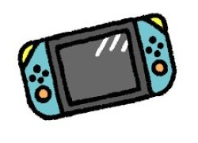
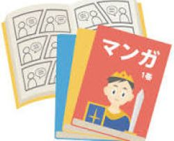

好きな物紹介ページ
このページでは僕のいろいろな好きな物を紹介していきます。
気になるものや同じものが好きだよーて方はぜひ連絡先・その他IDからメッセージなど送ってくれるとうれしいです。
色々な好きな物を書いていきます。
まずは食から
僕の好きな食べ物は料理はカオマンガイや舞茸の天ぷら、とんかつなどや
チーズケーキやミルフィーユなどのスイーツなども好きです。他にもいろんなおいしいものを探している途中です。
基本的には野菜（特にトマト・パセリ）以外は今のところは嫌いなものはありません
つぎ娯楽
好きな事やよくやることについて紹介していきます。
やはり最初はゲームです。これについては好きなゲームで詳しく書こうと思います。
次に、漫画です。漫画は最近あんまり紙で本を買わないのと読む時間があんまりないので増えていないのですがちゃんと数えたことはないけど大体500冊くらいあります。
特に好きな漫画は東京グールや君に恋する殺人鬼・君のことが大大大大大好きな100人の彼女など色んなジャンルの漫画を読みます。
- 
- 